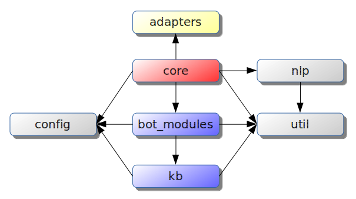

MBot
A modular bot framework.
Git Repository: https://github.com/liciojr/mbot
NPM Package: https://www.npmjs.com/package/mbot
Setup
Quick Start
- Clone this repository;
- Install dependencies:
npm i - Start:
npm start
New Project
- Create a project:
npm init -y;
- Install library and dependencies:
npm i --save mbot
- Create json configuration files in /config (default 'dev' environment);
- Create javascript modules in /bot_modules and /kb;
- Create app.js with:
require('mbot').init();
- Run:
node app.js
Features
- modular structure (e.g. communication, knowledge base, classifier, utilities), facilitating collaborative working;
- centralized multi-environment configuration;
- flexible integrated logging;
- universal database abstraction (Sails Waterline) for relational and NoSQL databases;
- global filesystem overlay;
- automatic lifecycle management with asynchronous init/dispose;
- extensible adapters (e.g. console, rest, xmpp, test);
- helper plugins (e.g. logger, HTML parser/scraper, spreadsheet reader, test stub, HTTP/HTTPS).
Configuration
- plain JSON format;
- standard path convention (
/config/dir/name.{env}.json); - extensible configuration, with MBOT_NODE_ENV and MBOT_NODE_ENV_ALT environment variables (allow partial redefinition);
- built-in environments:
dev: development (default)tst: test automationprd: production
- automatic init setup with
configmodules property; - system variable support in any value, replaced at runtime in
mbot.configloader:{ "key": "${ENV_VAR_X}"
Logging
- 'util/logger' helper with integrated configuration;
- shared use with core
mbot.logger(); - allow multiple transport channels and categories.
Database Abstraction
- 'util/db' helper for direct Waterline integration (without Sails);
- multiple relational (MySQL, PostgreSQL, FileMaker, Apache Derby, ...) and NoSQL (MongoDB, Redis, OrientDB, ...) database adapters, with same interface;
- multiple source model integration;
- allow custom adapters creation;
- built-in (zero configuration) disk/memory adapter for fast prototyping and test automation.
Overlay and Lifecycle Management
- core function
mbot.loaduses filesystem overlay (mbot.path) to import (require) a module, and save its init/dispose callback (if exists); - async single/multiple initialization, to instant or previous loaded modules (
mbot.init); - async global dispose (
mbot.dispose).
Adapters
Modules in /adapters folder, with init and onEvent (observer pattern) functions, allowing easily creation of custom adapters.
Choose and configure in config/core/brain.{env}.json file, at adapter.type key.
Built-in adapters:
- console.js - command-line interface adapter, configuration example:
"adapter": { "type": "console", "from": "admin@localhost", "prompt": "[question] " } - xmpp.js - XMPP protocol adapter, configuration example:
"adapter": { "type": "xmpp", "setPresence": { "status": "chat", "text": "alpha version" }, "settings": { "jid": "mbot@localhost", "password": "${MBOT_XMPP_PWD}", "host": "localhost", "port": 5222 } } - rest.js - REST service adapter, configuration example:
"adapter": { "type": "rest", "get": "/mbot", "port": 8080 } - test.js - Test automation adapter, configuration example:
"adapter": { "type": "test", "from": "usr1" }
Architecture
The solution has the following structure:

- config: central configuration directory ({module}.{environment}.json format);
- adapters: front-end modules (e.g. XMPP, REST, Console);
- bot_modules: communication modules (specialized dialogs);
- kb: knowledge base;
- lib/core: asynchronous core and subsystems facade;
- nlp: natural language processing modules;
- util: utilities (e.g. HTML extractor, spreadsheet reader, HTTP consumer, database integration, logger).
Applications should focus on bot_modules and kb sections.
Workflow Summary
A main controller (lib/core/brain) execute the following tasks:
- read
config/core/brain.{env}.jsonconfiguration; - load model and open database configured in
dbkey; - invoke core loader (
lib/index) to fetch configured modules inloader.bot_moduleskey fromconfig/index.{env}.json; - load language module configured in
nlpkey; - invoke core asynchronous global init;
- load and start adapter configured in
adapterkey; - register adapter
onReplyevent and wait for requests.
For each request, the main controller creates a dialog object with some properties:
{
from: 'user abc',
text: 'question xyz',
bots: {},
action: '',
entities: [],
nonEntities: []
}The language module fills action/entities/nonEntities fields information, and bots property with a list of compatible communication modules. By default, following rules apply:
- if none or 3+ modules are compatible, will return
brain.message.unknownconfigured message; - if 2 modules are compatible, will return help text from this modules, for user refinement;
- if only one module is compatible, it will be invoked to format a reply.
Collaborative Work
The framework was designed to allow multiple concurrent development on the same repository. To accomplish this, follow these steps:
- define a user tag, example:
u01; - clone
bot_modules/templates/hello_bottobot_modules/u01/hello_bot, replacing "template" with "u01" in keywords array:module.exports = { keywords: ['u01'], reply } - clone
config/index.template.jsontoconfig/index.u01.json, replacing "templates" with "u01" in "loader.bot_modules" section:{ "loader": { "bot_modules": { "u01": "*" }, - define environment variable MBOT_NODE_ENV with u01, and start MBOT;
- type "u01" to receive a welcome message;
- to customize main controller features, clone
config/core/brain.template.jsontoconfig/core/brain.u01.json, replacing whatever you want; - any Knowledge Base modules in
kb/*can be used, or a new directorykb/u01can be created to add new ones.
Bot Modules
NLP Modules
Configure a Natural Language Processing module with nlp.type key in config/core/brain.{env}.json file, example:
"nlp": {
"type": "bayes",
"stemmer": "node_modules/natural/lib/natural/stemmers/porter_stemmer.js"
}Built-in modules:
nlp/hashtag: deterministic classifier, based on rules;nlp/bayes: natural classifier, with Naive-Bayes algorithm.
To create a NLP module, implement a classify function in nlp folder, with 2 arguments: a dialog and a callback. Remember to configure nlp.type key.
Current Named Entity Recognition use a simplified rule set:
- text between quotes, example:
how old is "Peter Parker"?- entities
["Peter Parker"]
- entities
- simple number, example:
sum 5 and 6- entities
["5", "6"]
- entities
- uppercase word, except sentence starter, example:
What is Peter phone?- entities
["Peter"]
- entities
Communication Modules
Files under bot_modules folder, with following interface:
- Required:
keywordsproperty (string array): first element required (master keyword for deterministic classifier). Other keywords used for natural language classifier;reply(dialog, callback)function;
- Optional:
actionsproperty (object): action dictionary, each entry with keywords string/array;helpproperty (string): help text.
Examples:
- currency_bot.js - display a list of countries related to a currency symbol, example:
which countries use "GBP" currency?"BRL" country
- degree_bot.js - temperature conversion bot, examples:
95 to celsius35 to fahrenheit
- echo_bot.js - simple echo message, example:
some echo here
- geo_bot.js - display your/some IP address location, examples:
my address?ip of "github.com"
- google_bot.js - show latest technology news from google site, example:
tech news
- hobby_bot.js - user hobby list manager, examples:
please, include a new hobby for me: Carpentryshow my hobbies
Knowledge Base Modules
Any file under kb folder. Examples:
- currency_kb.js - use
util/spreadsheethelper to read information from a spreadsheet file; - degree_kb.js - use
soapexternal library to consume a public SOAP webservice at webservicex.net; - geo_kb.js - use
util/httphelper to consume a public REST service at http://freegeoip.net; - google_kb.js - use
util/htmlhelper to extract information from a Google HTML page; - hobby_kb.js - use
util/dbhelper to interact with a database.
Tests
First time, type npm install to fetch dependencies, then type npm test.
Test support:
- adapters/test.js: expose "request" method for test automation;
- util/test.js: utility helper for test implementation, compatible with Mocha framework;
- test/examples/*: implementation examples.
License
GNU Lesser General Public License (LGPL), version 3 or later.
See the LICENSE file in the root directory or https://www.gnu.org/licenses/lgpl.html.